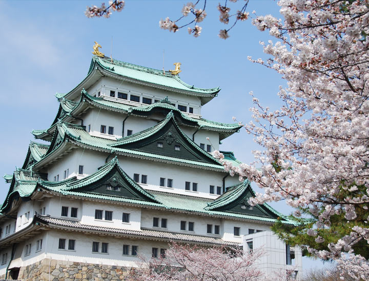

For over 350 years, it was the biggest, the best designed, the most gorgeous and well preserved of all the castles in Japan, and rightly so it had been designated a National Treasure. The artworks within it’s splendid palace, and the palace itself were of higher quality than it’s counterpart, the current National Treasure, Nijo Castle Palace in Kyoto. The Emperor had used the castle as a summer residence between 1893 and 1930, and the Imperial Military has established a barracks within it’s confines. It was a landmark, the pride of Nagoya City.
One fateful night, May 14, 1945, just months before Japan capitulated to the allies in World War Two, American aerial fire bombing reduced the castle, it’s turrets, gates, walls and it’s fabulous palaces to ashes.
During the Edo Period, Nagoya was one of the most important castle towns. Seat of the Owari Tokugawa Clan, one of the three branches of the Tokugawa family from which the Shogun could be chosen, Nagoya Castle was the first line of defense against rival Osaka.
“The nations biggest keep”
Topped with two meter tall 18 Karat golden dolphin like shachi ornaments, Nagoya Castle was the nations biggest keep. It has more karahafu, the triangular shaped roof features than any other Japanese castle, and interestingly featured two keeps, a smaller keep linked via a high walled, open topped walkway to the magnificent main keep.
Work on what was to become the nations biggest and most imposing fortress began in 1610, and was completed two years later. The wily Tokugawa Ieyasu ensued that the most splendid castle was built at next to no personal cost. Instead, he ordered the nations daimyo, the nobility to supply stones for the walls, timbers for the buildings, and great numbers of laborers to complete the massive construction.
Sourcing and transporting the many tons of huge stones and construction materials, not to mention timber, and labor costs put considerable financial strain on the various nobles. A strain that prevented them spending on arms, armor and armies, thus lessening any potential for insurrection.
Any daimyo refusing to comply would be destroyed, and in an effort to show compliance, many would carve a crest in the stones they supplied to prove their allegiance. These crests can still be seen along the stone walls and makes for an enjoyable side attraction of trying to find them, and looking at the many varied marks made.
One of the biggest rocks used in the walls is known as the Kiyomasa Stone after the samurai architect, Kato Kiyomasa, who was enlisted to use his considerable castle building skills to make Nagoya one of the most impeneterible fortresses in Japan. His statue can also be seen standing atop a large stone, as he was said to have done when encouraging the workers.
On becoming Shogun, Tokugawa Ieyasu decreed that there was to be only one castle per province, and so many smaller castles were destroyed in compliance. In the case of the construction of Nagoya Castle, the many smaller surrounding castles were dismantled, and the stones and timbers used in the construction of Nagoya. One of the most famous castles, nearby Kiyosu Castle suffered the same fate, however the main keep of Kiyosu was dismantled, and rebuilt on the north western corner of Nagoya, where it served as a yagura watch tower, and became just one of the three yagura to survive the fire bombings of World War Two.
The other two surviving yagura, the Southwest Hitsuji Saru tower and the Tatsumi turret on the south eastern corner can still be seen standing over the inner dry moat, flanking the original iron plated Omote Ninomon Gate.
“Wall of Swords”
Other features to note are the anti-ninja “Wall of Swords”, rows of spikes around the outer roof edge of the open walkway connecting the two keeps and around the Fumei Gate. Of interest to hard core castle fans is the site of the original Nagoya Castle, where Oda Nobunaga is said to have been born. The former castle stood in what is now the Ni no Maru, or Second Citadel, and is acknowledged by a signpost and memorial stone.
The castle was reconstructed in concrete in 1959, and internal displays greatly improved prior to the World Expo in 2005. Special exhibitions are regularly staged in the second floor Exhibit Hall, while the third floor features a reproduced castle town environment.
There’s more than just the big castle. Stroll the beautiful gardens and enjoy the seasonal flowers and blossom, try a traditional beverage in the tea rooms, hunt for crests engraved on the stone walls or just lap up the history at Japan’s biggest castle. Nagoya Castle remains a proud symbol of the city, one you’ll be proud to have visited.
Next >